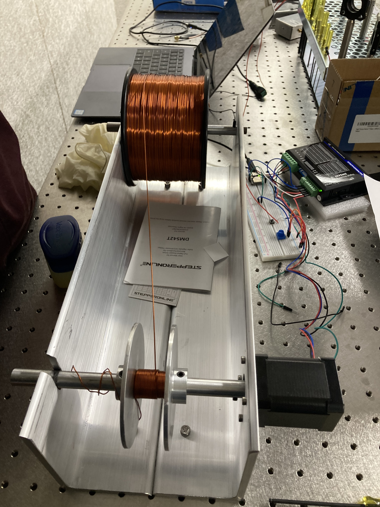
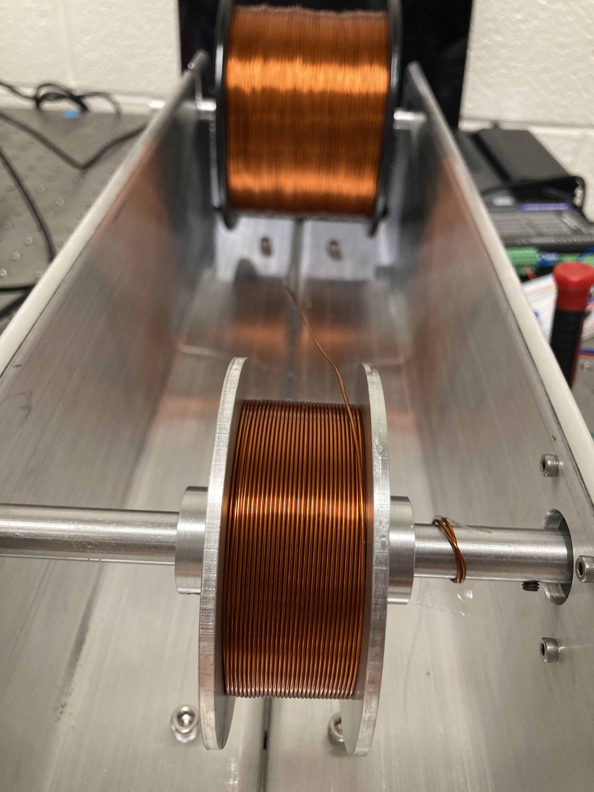
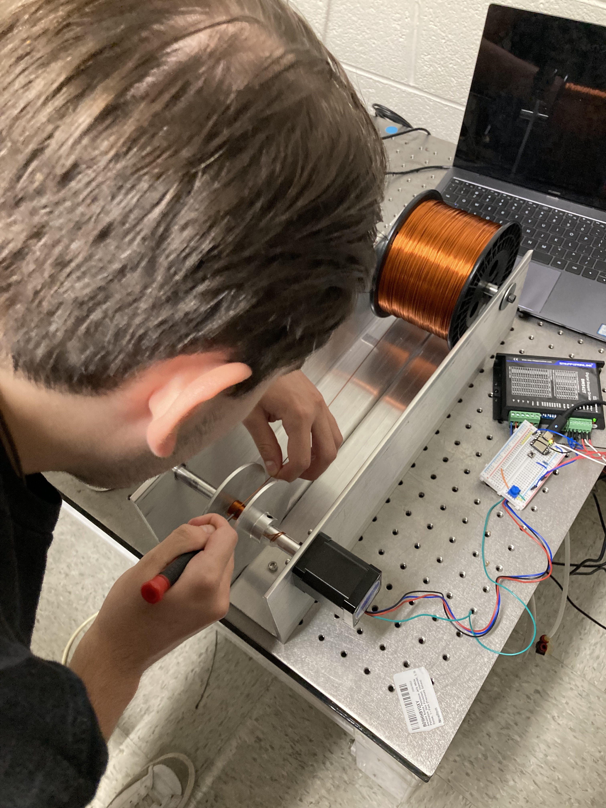

Completed on: 2023-09-18
Here we see the blueprint of the magnet maker as it was machined to spec before we attach the necessary hardware to actually be able to make some magnets!
  Here we see the magnet maker in progress and then finally complete! The final image is of an undergrad in our lab (Julian!) using it to create precision windings for a vector magnet.
A short video of me testing the magnet maker before it is finalized.
This project was one of the first projects I worked on after starting my PhD as an intermediary step towards building up our lab capabilities. Since our lab focuses on ferroic materials we despretely needed a way to build robust custom built magnets for use in transport setups. The way it works is quite simple; we want wire to be wound as tightly and neatly as possible to increase the amount of turns per unit length (why would we want that?) and thus a simple stepper motor coupled with a microcontroller with a potentiometer attached allows the user to variably control the speed (slower to start the winding then speed up so it doesnt take forever). The magnet is sandwhich between two aluminum plates that can be variably changed to adjust the width of the magnet and the height is whatever the user desire up till the 3.5" the plates provide. The entire rod is coated in vaseline and a neat trick from my PI Lucas is to attach a thin sheet of paper between the rod and where you start the magnet to make it easier to transfer off of the winding rod and to be melted into its shape. This is done by literally shorting the two ends of the coil with a DC power supply and watching the thermoplastic coating on the wires melt and fuse while trying to not breathe in the fumes. If the magnet is especially large, I also like to use a heatgun on the outside to speed up the process.